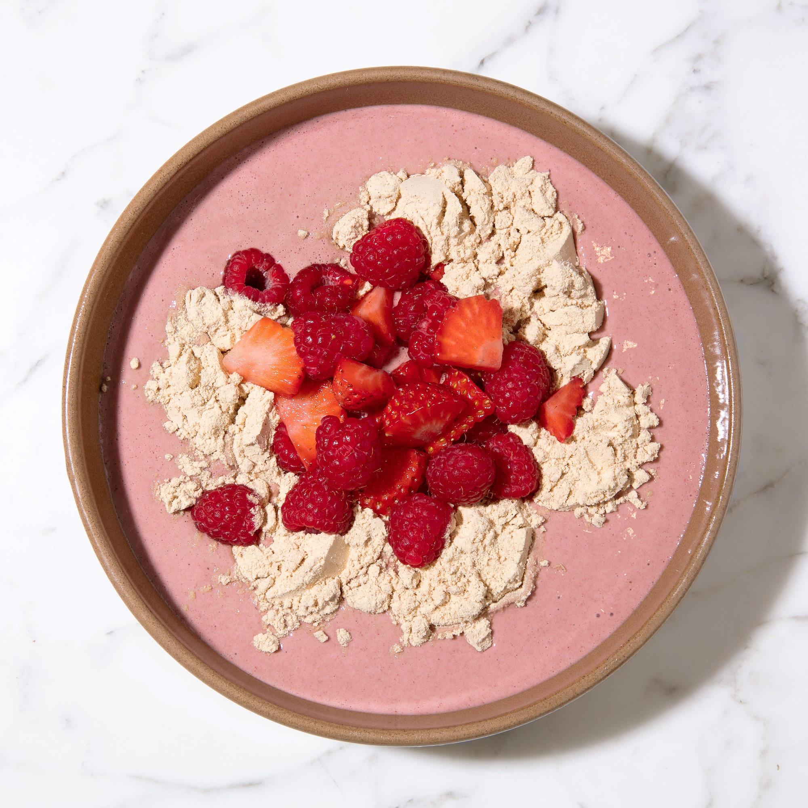

Nutty Pudding

Description
Nutty Pudding is Bryan’s favorite meal of the day and is also favored by his friends. As he often mentions, the saddest moment of his day is the last bite of Nutty Pudding. Here's how to make it:
Ingredients
- 50-100 mL Macadamia Nut Milk
- 3 Tbsp ground macadamia nuts
- 2 tsp ground walnuts
- 2 Tbsp chia seeds
- 1 tsp ground flaxseed
- 1/4 piece of brazil nut
- 1 Tbsp dark chocolate or cocoa flavanols
- 1 tsp sunflower lecithin
- 1/2 tsp ceylon cinnamon
- 1/2 cup blueberries/raspberries/strawberries (your choice)
- 3 cherries
- 2 oz pomegranate juice
- Optional: 30-60 grams of pea protein
- Optional: 1 Tbsp sweetener Trehalose
- Optional: 1 Tbsp Manuka honey
How to Cook Nutty Pudding
- Start with the Base: Add 50-100 mL of Macadamia Nut Milk into a blender, depending on your desired consistency.
- Add the Nuts and Seeds: Add the ground macadamia nuts, walnuts, chia seeds, and ground flaxseed into the mix.
- Enhance the Flavor: Add in the cocoa or cocoa flavanols, sunflower lecithin, and ceylon cinnamon for a rich taste.
- Fruits for Sweetness: Add 3 cherries, half of your chosen berries, and the pomegranate juice.
- Blend it Up: Blend the mixture on high for 3 or 4 minutes until it reaches a smooth consistency.
- Pour and Garnish: Pour the mixture into a dish, and then top it with the remaining berries.
- Protein Boost (Optional): If desired, add 30-60 grams of pea protein to the mix.
- Go Wild (Optional): For an extra sweet touch, add a tablespoon of Trehalose and Manuka honey.